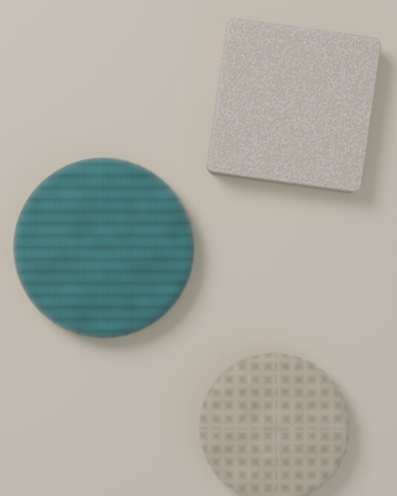

Copy paste repeat
A copy of a copy, and that's okay.



Abstract
What if a copy is not a lesser thing, but the way things go on? Plato called a painting a copy of a copy, three removes from the truth, and so a loss. Benjamin named what the copy loses: aura, "a strange weave of space and time," the here and now of the original. Copying does wear things down: a photocopy of a photocopy blurs, and each generation adds noise. Yet the noise is what makes each copy its own. Alvin Lucier re-recorded his voice in a room until the room's resonance replaced the words (1969). Only noise calculated in advance, a filter's grain or a preset flaw, comes out the same every time. People are copies too: genes copied from two parents, mitochondria from the mother alone, each copy a little off. There is no first original to return to, and that is fine. Collectors knew how to enjoy this. The cabinet of curiosities set shells, carvings and marvels side by side for wonder rather than truth; Mark Dion keeps the habit, playing the amateur naturalist and filling a cabinet with what he dug from the Thames (1999). Collage does it with printed copies: Kurt Schwitters and Hannah Höch cut up mass print and made something no press could repeat. This theme takes the copy lightly. A copy is a loss only to someone sure they hold the Truth; to someone who accepts their flaws, each copy is a fleeting moment, special if treated as one.
Impact: Direction
Nobody controls the wave. A surfer reads it, rides it, and carries what was learned to the next one. No two waves are alike, even within one set, so every lesson is a copy taken to new water: copy, paste, repeat, and see if it holds. Waiting for the perfect wave loses the day; the surfer moves on, finds a better spot and tries again. A wave pool can repeat the same wave on command. It is good for practice, but the ride happens where nothing repeats. Making works the same way: the discipline is in the body and the skill, while the material, the batch and the weather run their course. Each piece is a wave caught once: alter what worked, discover what changed, and keep the good accident, in style if you can. Copy paste repeat, what do I know.
Overall mood
A cloud printed on paper, a leaf or a scrap of lace that left its own shadow on a sheet, a halo around the sun. The pictures ask what a photograph keeps of its subject: the light of one place at one hour, the trace of the thing itself, and the edge and grain of the medium that carried it. The tones are graphite and silver gray, with cyanotype blue and dusk blue. Light is soft and the subjects are quiet: sky, plant, thread.

Definition and test
- Concept
- Aura: "the sense of distance and uniqueness attached to an original work in a specific time and place. Benjamin argues mechanical reproduction weakens it.".
- Test
- What is lost and what is gained when this is reproduced? Evidence of: presence.
- Reading for images
- A photograph cannot show presence, only the marks of how it was made: the print edge, the grain, the light, the contact with the thing. The board shows those and leaves the loss or gain to the story.
Motifs
Each motif is taken from a sentence in the sources above.
| # | Motif | Theory sentence it comes from | Images |
|---|---|---|---|
| 01 | The sky as equivalent: a cloud with no ground, a mood made of light | "unique presence ... in a specific time and place"; Stieglitz named in the research (his Equivalents are cloud studies) | (01), (04) |
| 02 | The print made by the thing: lace and alga leave their own shadow on a sheet | "What is lost and what is gained when this is reproduced?": contact printing is reproduction that keeps a trace of the original | (02), (03) |
| 03 | Light and the medium's mark: halo, rainbow patch, the edge of the print | "sense of distance"; McLuhan named in the research (the medium itself) | (05), (06) |
Motif 02 is strong in precedent but shows reproduction, not aura. Sally Mann (wet-plate collodion, family portraits) has no image: her work is rights-reserved and mostly portraits with faces, so none was used.
Counter-case
It is the same subject as (01) and (04), but saturated and phone-processed, the kind of sunset that is easy to make and to repeat.
Color direction
No. The test concerns presence and reproduction, not appearance. The palette below is measured from the seven images and describes this board only; it is not a proposal for the color library. Cyanotype blue is a historical process color, not a theme color.